Saxdor 320 GTO
Duljina 12,00 mOsoba 12Motor 2× 300 KSBrzina 48 mph
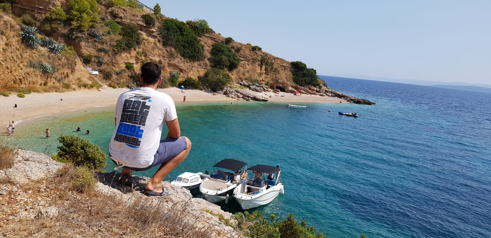
Najam gliser brodica sa skiperom ili bez njega, privatni izleti do Modre špilje, Hvara i Plave lagune te brodski transferi sa splitske zračne luke. Baza je kod drvenog mosta na Foši, u starom Trogiru.
Svaki dan polazimo iz Trogira ili Splita, a brodicu možemo dostaviti i na drugo mjesto u srednjoj Dalmaciji.
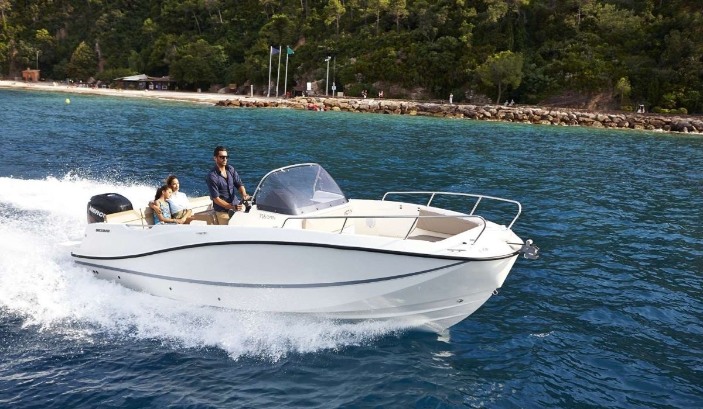
Motorne brodice do 12 metara, uglavnom s izvanbrodskim motorom. Bez posade uz brodarsku dozvolu ili sa skiperom – na dan, vikend ili tjedan.
Flota i uvjeti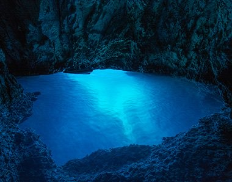
Modra špilja i Hvar, Plava laguna i Šolta, Zlatni rat, Vis, Kornati – grupno ili privatno, ili ruta po vašoj želji.
Svi izleti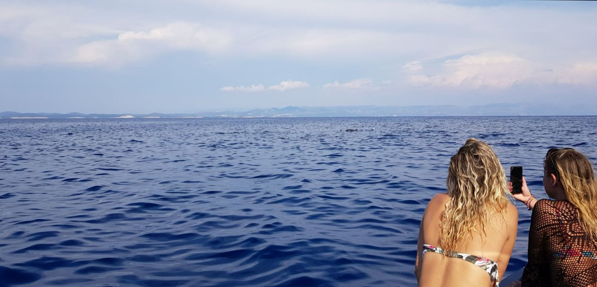
Brodski taksi iz zračne luke Split ili iz Splita i Trogira do Hvara, Brača, Šolte i drugih otoka – do 11 putnika uz skipera.
Transferi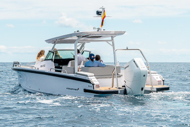
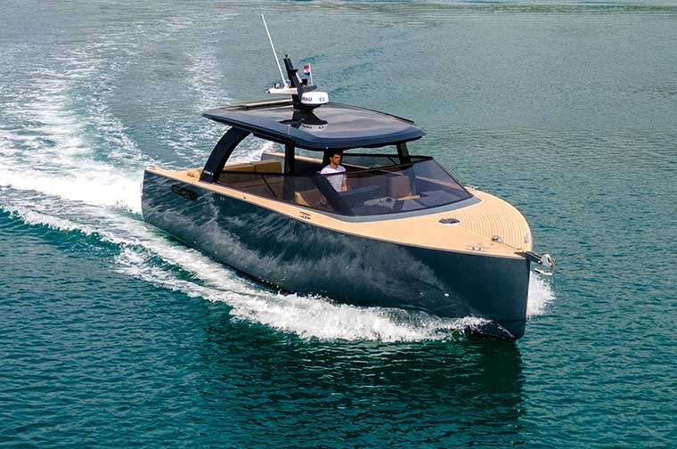
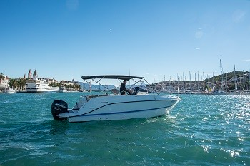
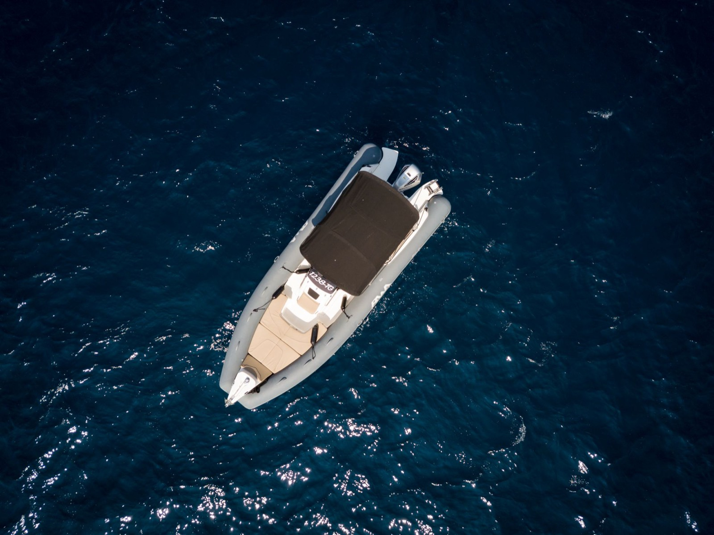
Mayer Charter je hrvatska tvrtka sa sjedištem u Trogiru od 2009. Ime je dobila po prezimenu vlasnika i osnivača, čiji korijeni sežu u Njemačku.
Uz najam brodica, tvrtka se bavi izletima i brodskim transferima, a nudi i dodatne usluge: obuku skipera, team building i opremu za vodene sportove. Brodice se svake godine obnavljaju, a skiperi tečno govore engleski.

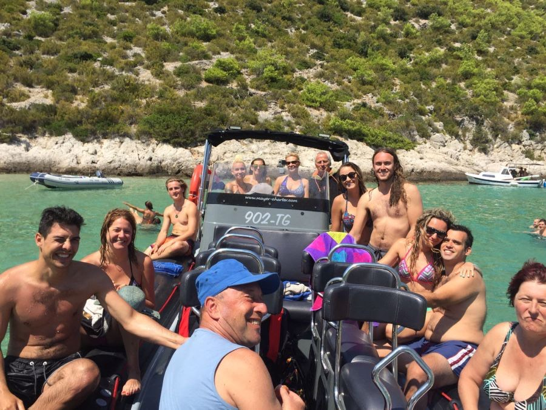
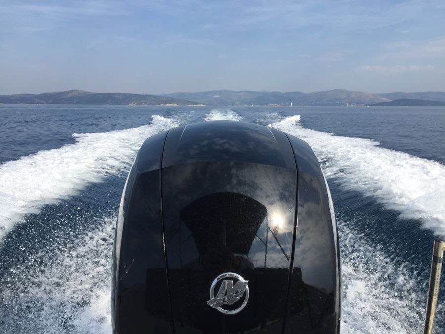
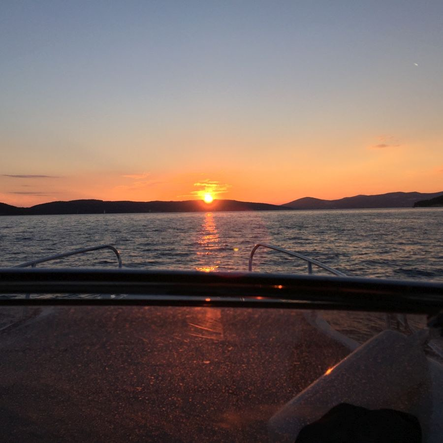
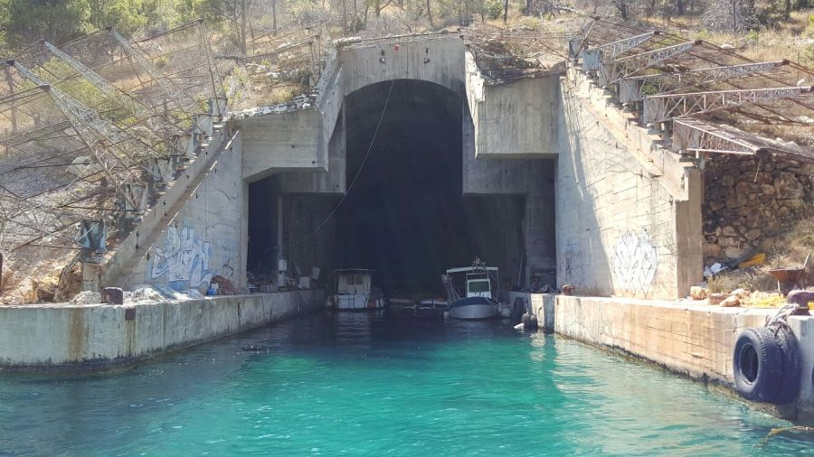
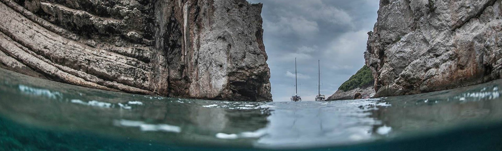
Recenzije prenesene sa stranice mayer-charter.com, izvorno na engleskom.
Tony and Lea were great! Fun way to see the islands. The Blue Cave was a unique experience and well worth it.Erin TIzlet Modra špilja
This was a fantastic day out and the highlight of my trip! Vlatka and JB were absolutely wonderful guides, going out of their way to make sure we were comfortable…Ziling NgModra špilja, Hvar i otoci
We rented a boat and skipper “Mario” for a day last week. It was the highlight of our trip to Croatia. Our trip was exactly what we asked.Dalls, UKNajam brodice sa skiperom
Svaki dan 7–21 h
Drveni most – Foša
Trogir, uz stari grad
Rimski put 28G
21220 Trogir
Trogir: ispred tvrđave Kamerlengo · Split: gat Matejuška